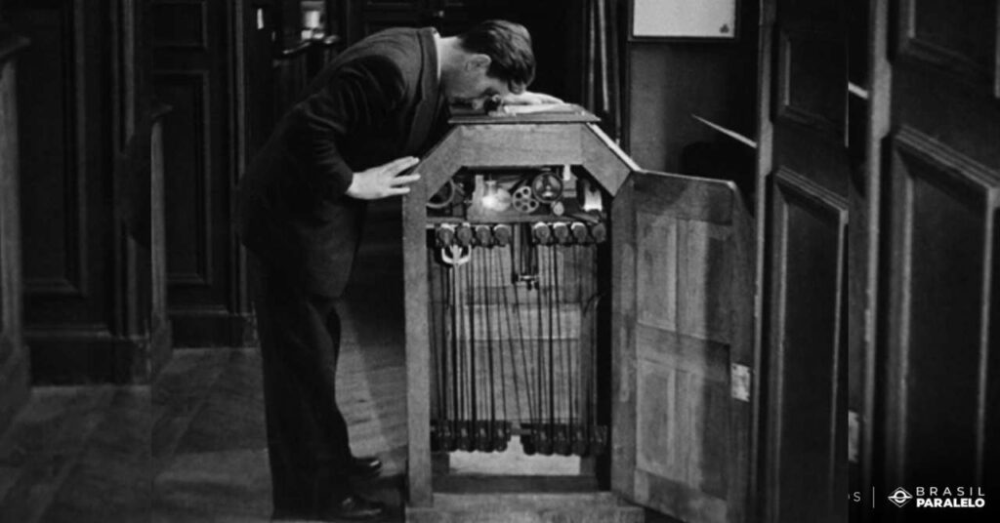
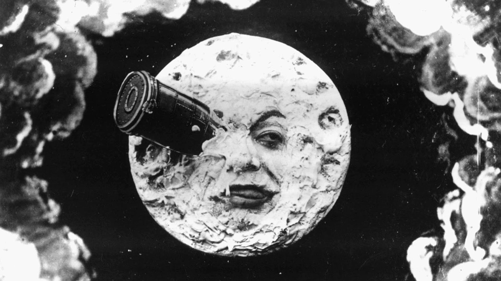
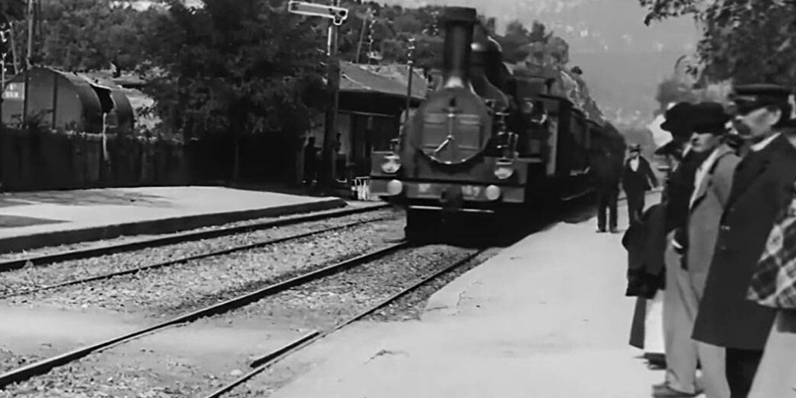
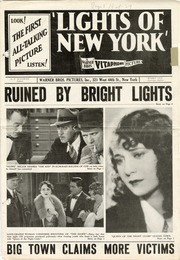
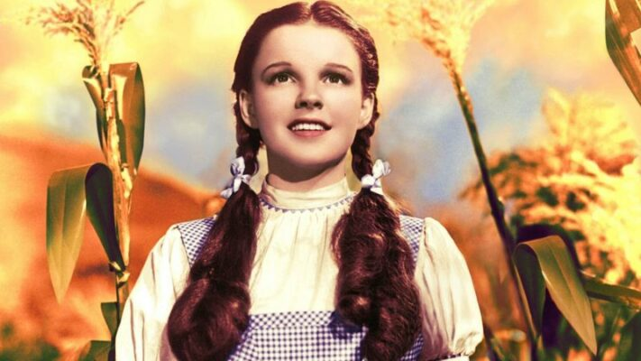
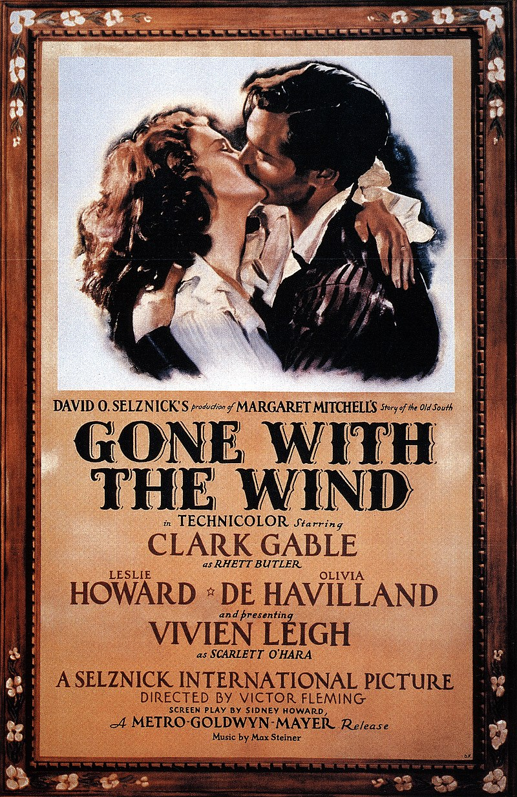
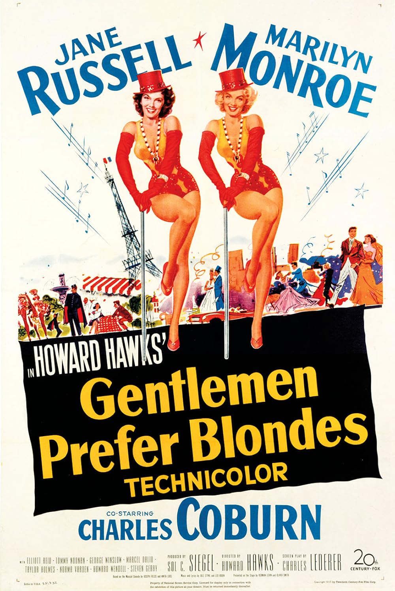
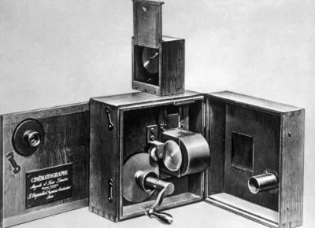
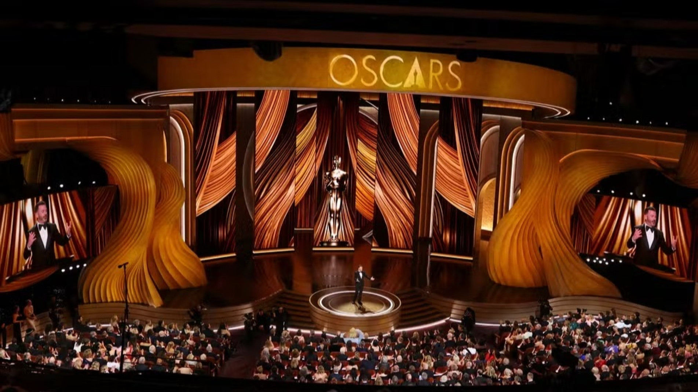
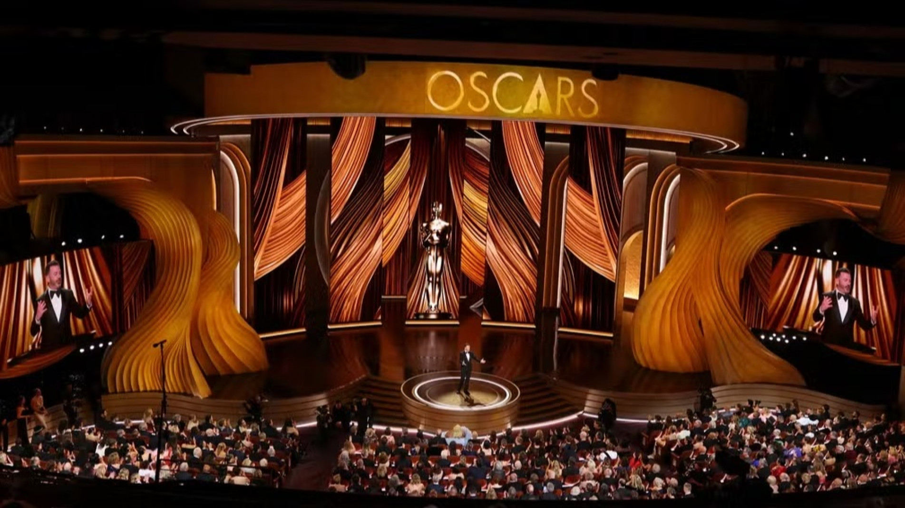

Como surgiu o cinema mudo
O final do século XIX foi marcado por uma efervescência de experimentações científicas e tecnológicas. Foi nesse contexto que visionários como os irmãos Lumière e Thomas Edison começaram a explorar a captura e a projeção de imagens em movimento. Em 1895, os irmãos Lumière apresentaram ao mundo o Cinematógrafo, um aparelho capaz de projetar curtas-metragens em locais públicos. Esse momento emblemático marcou o início oficial da sétima arte, e as primeiras projeções públicas rapidamente conquistaram a imaginação do público
À medida que a novidade se espalhava, surgiam cineastas pioneiros que experimentaram com a narrativa visual. Georges Méliès, por exemplo, ficou conhecido por seus truques de ilusionismo e efeitos especiais em filmes como “A Viagem à Lua” (1902). A linguagem do cinema estava apenas começando a ser explorada, e as possibilidades pareciam infinitas.
Embora não seja claro onde realmente começou a história do cinema, a primeira exibição de um filme de curta duração aconteceu no Salão Grand Café, em Paris, em 28 de dezembro de 1895. Nesta data, os Irmãos Lumière fizeram uma apresentação pública dos produtos de seu invento ao qual chamaram de Cinematógrafo. O evento causou comoção nos 30 e poucos presentes, a notícia se alastrou e, em pouco tempo, este fazer artístico conquistaria o mundo e faria nascer uma indústria multibilionária. O filme exibido foi L'Arrivée d'un Train à La Ciotat. Na primeira década do século XX, o cinema ainda era uma forma de arte essencialmente visual. Os filmes eram acompanhados por músicos ao vivo ou trilhas sonoras executadas em sincronia. Este período, conhecido popularmente como a Era do Cinema Mudo
 O Cinematógrafo  Lua de (a Viagem a Lua)  Trem Chega Na EstaçãoA Popularidade Cresce e Início dos Filmes falados
O desenvolvimento de filmes fez crescer os nickelodeons, pequenos lugares de exibição de filmes onde se pagava o ingresso de 1 níquel, no qual se juntavam uma grande quantidade de pessoas, chamando a atenção da elite para o poder de influencia daquelas exibições.A transição do cinema sem som sincronizado para o falado, conhecido como “talkies”, marcou uma revolução na forma como as histórias eram contadas. O primeiro filme com som totalmente sincronizado foi “The Lights of New York”, de Bryan Foy, em 1928. A aceitação do som em Hollywood foi rápida, tanto que no final de 1929 quase todos os filmes já eram falados.
Pessoas Reunidas no Cinema em Fortaleza  Poster "The Lights of New York"(1928)Os filmes também começaram a crescer em duração. Antes um filme durava de 10 a 15 minutos. Em 1906, o filme australiano "The Story of the Kelly Gang" tinha 70 minutos sendo lembrado até hoje como o primeiro longa-metragem da história do cinema. Depois do filme australiano, a Europa começou a produzir filmes até mais longos: "La Reine Élisabeth" (filme francês de 1912), "Quo Vadis" (filme italiano de 1913) e "Cabiria" (filme italiano de 1914), este último com 123 minutos de duração.
Techicolor e o Cinema Colorido
A chegada das cores ao cinema marcou um ponto de inflexão na história da sétima arte. No início do século XX, os filmes eram predominantemente em preto e branco, refletindo a tecnologia da época. No entanto, com o desenvolvimento de novos processos de colorização, como o Technicolor, a paleta do cinema se expandiu, trazendo uma nova dimensão à narrativa visual. Filmes icônicos como “O Mágico de Oz” (1939) e “…E o Vento Levou” (1939) cativaram o público com seus cenários vibrantes e figurinos deslumbrantes. A introdução das cores não apenas enriqueceu a estética cinematográfica, mas também abriu novas possibilidades criativas para cineastas explorarem a profundidade emocional das histórias contadas na tela.
 Dorthy de "O Mágico de Oz"  Poster de "O Vento Levou"  Poster de "Os Homens Preferem As Loiras"
Apesar de filmes capazes de registrar imagens em cores já existirem desde os primeiros anos do século XX, foi só após a década de 1920 que isso se popularizou no cinema, conforme as tecnologias para trazer cores para as imagens em movimento foram se tornando cada vez mais avançadas.
Produções coloridas existiram praticamente desde sempre no mundo do cinema. Grandes nomes do mundo dos efeitos especiais, como Georges Méliès, já usavam técnicas para produzir filmes coloridos, mesmo sendo complicadas, demoradas e trabalhosas, e, portanto, caras. No começo de tudo, a colorização era feita quadro a quadro e as películas, exibidas com uma limitação de cores para o público que precisava pagar mais por elas.
É claro que alguns problemas tiveram que ser driblados pelos cineastas assim que adotaram o processo: as produtoras não podiam comprar as câmeras da Technicolor, apenas alugá-las – incluindo técnicos operadores – para registrar seus filmes. Os estúdios precisavam estar sempre muito bem iluminados, pois o filme era lento (ASA 5). Isso aumentava o calor no set de filmagem de maneira que ficava quase insuportável atuar. Tudo isso foi sendo aprimorado durante as décadas em que a Technicolor reinou no cinema colorido.
O Cinema chega ao Brasil
O cinema brasileiro teve como ponto de partida a sua primeira sessão, que foi realizada no Rio de Janeiro, em 1896. As primeiras filmagens remontam a 1897 e 1898, e as primeiras produções com histórias fictícias remontam ao começo do século XX. O Cinema Novo e o Cinema Marginal foram duas importantes correntes do cinema nacional.
O Cinematógrafo chegou ao Brasil poucos meses depois da primeira demonstração pública do funcionamento de um cinematógrafo. Em 8 de julho de 1896, a primeira sessão de cinema foi realizada aqui no Brasil. Essa sessão aconteceu na Rua do Ouvidor, no Rio de Janeiro, exibindo pequenos filmetes que traziam filmagens de cidades europeias.
Esse foi o ponto de partida do cinema aqui no Brasil e, uma vez que essa novidade chegou aqui, as primeiras filmagens começaram a ser realizadas. Para isso, eram necessárias filmadoras, e as primeiras do tipo também chegaram ao nosso país na década de 1890. As primeiras filmagens realizadas no Brasil foram feitas por Vittorio di Maio, Afonso Segreto e José Roberto Cunha Salles.
Atualmente, considera-se que o primeiro filme gravado no Brasil foi Chegada do Trem em Petrópolis, de 1897. Esse filme supostamente grava uma estação, em Petrópolis, de um trem que carregava o presidente Prudente de Morais. Muitos questionam a legitimidade dessa filmagem, alegando que ela pode não ter sido gravada aqui, mas na Europa.
 Cinematógrafo Brasileiro
 Vittorio di Maio
Anúncio do Filme "Chegada do Trem em Petrópolis"
Vittorio di Maio
Anúncio do Filme "Chegada do Trem em Petrópolis"
O Oscar
O Oscar (The Academy Awards ou The Oscars, em inglês) é uma cerimônia de premiação do cinema, reconhecida atualmente como a principal premiação do tipo existente no mundo. Foi fundado em 1927 e teve sua primeira cerimônia em 1929. Atualmente, é um evento milionário que atrai milhões de espectadores anualmente. Os vencedores de cada categoria são determinados por meio de uma votação que é realizada pelos membros da Academia que organiza a premiação. Existem critérios muito bem definidos que determinam quem dos membros pode votar em cada categoria. O Brasil nunca ganhou um Oscar, mas já teve indicados em diferentes categoriasSurgimento
O surgimento do Oscar teve relação com o processo de expansão pelo qual o cinema americano passou no século XX, sobretudo na década de 1920. Naquele momento, grandes nomes do cinema americano resolveram unir-se para criar uma organização que fosse responsável por administrar a imagem de Hollywood, onde os filmes eram produzidos. Assim, nasceu a Academia de Artes e Ciências Cinematográficas ou Academy of Motion Picture Arts and Science, com sigla Ampas, no inglês. Essa associação foi oficialmente fundada no dia 11 de maio de 1927 e surgiu de uma ideia de um dos chefes da MGM, Louis B. Mayer. Ela teve como primeiro presidente Douglas Fairbanks, um dos principais atores norte-americanos do começo do século XX. Os membros que formaram a Ampas decidiram que era necessário criar uma cerimônia para premiar os melhores filmes produzidos a cada ano. Assim, em 1927, nascia a ideia que deu origem ao Oscar, a cerimônia de premiação de cinema mais famosa do mundo.Como a Votação Funciona?
A escolha dos indicados e dos vencedores em todas as categorias do Oscar ocorre por meio de votação entre os membros da Academia, que passaram a fazer parte dela por meio de um convite. Acredita-se que ela tenha hoje, aproximadamente, mais de 10 mil membros, e que desse total, cerca de 9500 estejam aptos a votarem para definir os vencedores das categorias. O convite à Academia é feito para jornalistas especializados, pessoas da área do cinema que tenham a indicação de, pelo menos, dois membros da Academia da mesma área de atuação da pessoa, e premiados em edições anteriores do Oscar. É importante esclarecer que a maioria das categorias só pode contar com o voto de pessoas que tenham conhecimento técnico para avaliar os filmes concorrentes. Assim, apenas duas categorias são abertas ao voto de todos os membros: Melhor Filme e Melhor Filme Internacional. Uma vez que as votações são realizadas e os resultados dos vencedores são obtidos, os dados são guardados no mais absoluto sigilo. No dia da cerimônia, algumas medidas de segurança são tomadas, tais como a escolta dos envelopes com os nomes dos vencedores, realizada pela polícia norte-americana.
Estatueta Oscar
 Atores segurando seus prêmios
 Palco Oscar 2024
Atores segurando seus prêmios
 Palco Oscar 2024
Conclusão
Ao final dessa jornada pelo universo da história do cinema, esperamos que o site tenha cumprido seu papel de despertar a curiosidade, expandir o conhecimento e, acima de tudo, fortalecer o encanto por essa arte tão impactante. O cinema, mais do que uma forma de entretenimento, é uma janela para o mundo, uma ponte entre culturas e um espelho da nossa própria humanidade.
Cada filme carrega em si um pedaço de seu tempo e, ao mesmo tempo, transcende épocas, oferecendo a possibilidade de enxergarmos a vida sob novas perspectivas. A diversidade de estilos, gêneros e narrativas que o cinema nos proporciona é um lembrete constante de que não há limites para a criatividade humana, e isso é o que torna essa arte tão fascinante e inesgotável.
Através dos filmes, viajamos por diferentes épocas, conhecemos histórias fascinantes e experimentamos emoções que nos fazem refletir sobre nós mesmos e sobre a sociedade em que vivemos. Ao navegar por este site, acreditamos que você foi convidado a revisitar clássicos, descobrir movimentos cinematográficos inovadores e explorar as diferentes formas como o cinema pode contar histórias e provocar reflexões.
Se este site conseguiu transmitir um pouco da grandiosidade dessa experiência, então já alcançamos um dos nossos maiores objetivos. E mais do que apenas ensinar, esperamos que tenhamos conseguido compartilhar a paixão pelo cinema e sua capacidade de nos conectar emocionalmente com o que está além da nossa própria realidade.
Mais do que isso, desejamos que os visitantes saiam daqui inspirados a continuar explorando o vasto mundo do cinema, seja assistindo a filmes clássicos que marcaram épocas, ou buscando novas obras que desafiem suas percepções. O cinema, afinal, não é apenas uma obra estática, mas algo que se reinventa a cada nova visão, seja por meio de uma nova perspectiva histórica, crítica ou mesmo pessoal. É nessa contínua transformação que reside a verdadeira magia dessa arte, sempre pronta para nos surpreender e nos emocionar. E é essa troca, essa conexão entre o que vemos na tela e o que vivemos fora dela, que torna o cinema tão especial.
Obrigado por fazer parte dessa viagem pela história do cinema. Que essa paixão continue a crescer e que, a cada filme, uma nova descoberta aconteça, e que essa jornada nunca termine, pois há sempre algo novo a ser aprendido, sentido e apreciado no mundo fascinante do cinema.